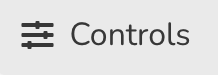
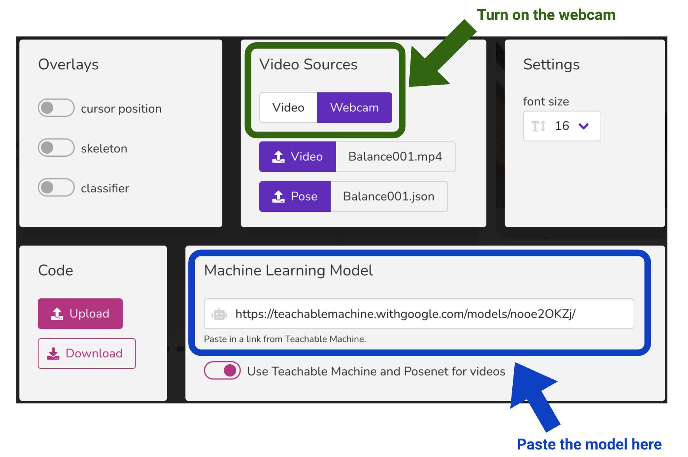
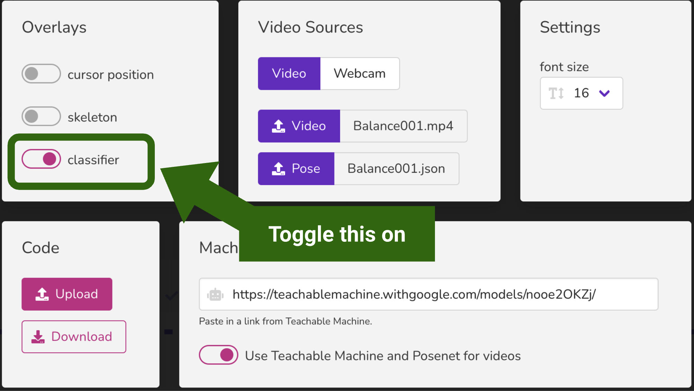

https://teachablemachine.withgoogle.com/models/nooe2OKZj/Machine Learning
What is machine learning?
Have you heard about machine learning? What does it sound like it might be?
Where do you think is machine learning used, or where can you find instances of it in action?
Expand To Learn About Machine Learning
Machine Learning is a field of Artificial Intelligence (AI) intended to build machines or computer systems that learn on their own.
Machine Learning algorithms identify patterns in observed data, build models that attempt to explain the world, and make predictions without being programmed with explicit rules.
Exploring Machine Learning models with danceON
We have created a pre-trained machine learning model using a tool called Google Teachable Machine and you will play and experiment with the model using danceON to figure out what the model does.
The model is packaged in the following link.
To use the model link above, copy the link.
Open danceON in a separate browser window/tab and click on “Controls” in the upper-right of the interface, to bring up additional options.
Paste the link you copied into the field labeled “Machine Learning Model” (highlighted in blue below). Leave all other options untouched.


Additionally, turn on the webcam (highlighted in green above). Expand and copy the code below into the danceON code editor.
Code
(pose, poseHistory, tm) => [
// Left wing 1
{
what: 'triangle',
when: tm[0].probability > 0.70,
where: {
x1: pose.leftShoulder.x,
y1: pose.leftShoulder.y,
x2: pose.leftEar.x,
y2: (pose.nose.y + pose.leftShoulder.y) / 2,
x3: (pose.leftElbow.x + 100),
y3: (pose.leftEar.y - 50)
},
how: {
fill: 'cyan'
}
},
// Right wing 1
{
what: 'triangle',
when: tm[0].probability > 0.70,
where: {
x1: pose.rightShoulder.x,
y1: pose.rightShoulder.y,
x2: pose.rightEar.x,
y2: (pose.nose.y + pose.rightShoulder.y) / 2,
x3: (pose.rightElbow.x - 100),
y3: (pose.rightEar.y - 50)
},
how: {
fill: 'cyan'
}
},
// Left wing 2
{
what: 'triangle',
when: tm[1].probability > 0.70,
where: {
x1: pose.leftShoulder.x,
y1: pose.leftShoulder.y,
x2: pose.leftShoulder.x + (width / 4),
y2: ((pose.nose.y + pose.leftShoulder.y) / 2) + 50,
x3: (pose.nose.x + (width / 2)),
y3: (pose.leftHip.y + 100)
},
how: {
fill: 'magenta'
}
},
// Right wing 2
{
what: 'triangle',
when: tm[1].probability > 0.70,
where: {
x1: pose.rightShoulder.x,
y1: pose.rightShoulder.y,
x2: pose.rightShoulder.x - (width / 4),
y2: ((pose.nose.y + pose.rightShoulder.y) / 2) + 50,
x3: (pose.nose.x - (width / 2)),
y3: (pose.rightHip.y + 100)
},
how: {
fill: 'magenta'
}
},
]
Move around and try different poses to trigger things to happen — observe and think about what is happening on the screen.
- What do you think is the code doing?
- What do you observe happens?
- What are the different shapes that get drawn?
- When do the shapes get drawn?
Now turn on the classifier option of danceON (highlighted in green below).

The classifier will show you the names of the poses that the model was trained on (in the upper right of the video), as well as the probability values of each pose, relative to the pose you are currently doing.
- When are the probability values low? High? In the middle?
- In what cases or situations is the model failing?
Rapid-prototyping: conditionals vs. machine learning model
Let’s do some rapid-prototyping. Open another instance of danceON in another browser window/tab and copy the same code that you’re currently using.
Replace the when section of the code — use what you learned about conditionals (from previous sessions) to write the when code conditions that would trigger the animations in the same way as the machine learning model. What are some ways that you might write a when-condition to identify a Wings Up/Down pose?
Discussion
- Based on our previous discussions and your experiences and observations from the activities above, what do you think are the differences between using conditionals and using a machine learning model?
- Can you think of specific instances or cases where you think it would be better to use conditionals versus machine learning models?